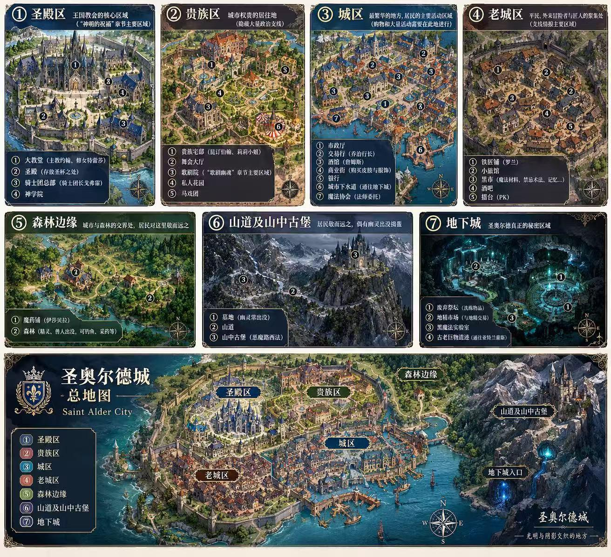

汉语言文学专业大四学生 · 有文本创作与内容赏析的产出经验
游戏名称：《第七重愿》
一、基本定位
1. 类型：西幻 / RPG / 剧情冒险 / 城镇探索 / 轻解谜 / 多分支叙事 / 多结局。
2. 游戏简介：在一个人人都有愿望，却没有人知道轻易实现愿望究竟应该付出什么代价的世界里。愿望是力量的主要来源，被称为“愿力”，玩家可以选择不同的职业技能，收集愿力并探索这个世界。
二、世界观
1. 简介：整个城市分为三个派系，分别是信仰娅拉女神来获得愿力的圣殿教会、相信愿力来源于与他者羁绊并以此使用魔法的魔法协会、相信愿力来源于自身的神秘组织。
2. 世界三大体系（各派系的不同价值观）
① 圣殿教会：成员相信愿望的实现与愿力的获得皆来自娅拉女神的祝福，他们认为人类的力量是渺小的，需要女神的庇护才能在这个世界获得力量，并得以生存。教会成员通过祈祷、圣物和仪式使用愿力。骑士负责消灭危险魔物、封印禁忌物品、维护城市秩序。平民受到教会的庇护来汇集愿力形成强大的守护力量。代表：主教、骑士、修女、圣骑士、大部分民众、先知、占星师……教会中存在真正虔诚之人、质疑神明者，在面对教会问题的讨论时，民众中存在温和派、野心家、激进派，派系受到政治线的一定影响。
② 魔法协会：成员相信愿望的实现是人与自然的联系，愿力主要用于魔法的实施，他们认为愿力来源于自然最终也要服务于自然，魔法师是城市中相对自由的存在，魔法师可以与民众建立友谊与羁绊。魔法协会会通过研究符文、药剂、术阵和精神力量使用愿力。不属于教会与政府管辖范围，长期与教会存在矛盾。主要负责魔法、魔药、魔物、古代遗迹的研究和魔法生物的培养。存在争议：魔法是否应受到管辖？代表：法师、女巫、炼金术士、魔药师、占卜师、自然精灵、湖中仙女……
③ 神秘组织：愿望的产生与实现源于你自己，靠自己。成员的力量来源多半来源于自身已有的强大天赋与种族优势。组织内人员的流动性较大，且并非传统意义的邪恶组织，不属于任何国家。恶魔可以通过契约与人进行交易来获得力量，是组织的重要成员，其业务包括：灵魂交易、诅咒、愿望咨询、愿望契约签订……怪物（比如海妖、龙族等则自身拥有力量），与恶魔签订契约的人类也是其组织一员。代表：恶魔、龙族、少部分人类、吸血鬼、海妖……
3. 物理与魔法设定：目前世界处于魔法鼎盛期，愿望是强大的力量来源，但并非只有“愿力”才是力量的形式。圣奥尔德城生活的人把“愿力”作为获取力量的手段。只有魔法师、恶魔能使用魔法，而人类虽不能直接拥有魔法，却通过建立组织（如教会与骑士团等）和娅拉女神的庇佑在这片大陆生存。人类如果要习得魔法或拥有特殊能力，则需要与恶魔进行契约并付出相应的代价。虽然三个主要派系共存，但各方势力私底下暗流涌动，黑魔法是禁忌却依旧有心怀叵测之人偷偷习得、娅拉女神虽会庇佑人类可人类中依旧有贪婪者选择背叛……人类并非完全处于被保护的状态，可以通过对圣器和武器的使用战斗。魔法师拥有魔法却会受到制约（魔法属性之间的克制关系）。神秘组织并非完全是黑暗的一方，怪物虽然有强大的力量但也会有弱点与情感，人类惧怕怪物，怪物不会在人类生活区域活动，它们通常生活在自己的栖息地中，偶尔有怪物幼崽会误闯城区，一些怪物会与人类、魔法师甚至恶魔产生情感羁绊。玩家最后会发现这三种价值体系没有绝对的对错，派系没有绝对的善恶。
3. 圣奥尔德城（Saint Alder City）
是游戏开始的第一主舞台，城市整体建筑风格参考中世纪欧洲的建筑设计，有哥特式教堂，城镇街道设计参考维多利亚早期的设计。人们以圣殿的钟声计时，一日会敲响 10 次钟，所以钟声间隔的时间为“1 托勒”，即一天的时长为“10 托勒”。有四季分别以“复活节”“萤火节”“丰收节”“冰雪节”这四个节日为划分节点。
地理文化：圣奥尔德城是整片大陆的一个关键区域，位于整个大陆的西南方，受娅拉女神的守护和庇佑。圣奥尔德城在千年前与亚特兰蒂斯毗邻，后由于板块运动亚特兰蒂斯沉入海底。在通过特定剧情过后，圣奥尔德地下城的古老巨物遗迹可传送玩家至人鱼居住的遗落的古城“亚特兰蒂斯”。以平原为主，气候温和，畜牧业、农业相对发达。老城区的矿产资源丰富但并未被发现，森林区域是魔法协会会员活动之处，深林处是湖中仙女、自然精灵和一些怪物的栖息地。山中古堡原先是一个贵族的宅子，后来贵族因为许下了某些愿望而没落，古堡就被恶魔路西法买下。
区域地图介绍（此地图为 AI 制作）

① 圣殿区：是王国教会的核心区域。（“神明的祝福”章节主要区域）
◇大教堂（主要 NPC 主教约翰、修女特蕾莎的主要活动区域）
◇圣殿（存放圣杯之处）
◇骑士团总部（若玩家所选职业为骑士，则需在此接受任务，主要 NPC 骑士团长戈弗雷的活动区域）
◇神学院
② 贵族区：是城市权贵的居住地。（隐藏大量政治支线）
◇贵族宅邸（主要 NPC 昆汀伯爵、莉莉小姐的居住地）
◇舞会大厅
◇歌剧院（“歌剧幽魂”章节主要区域）
◇私人花园
◇马戏团
③ 城区：是整个城市最繁华的地方，是居民的主要活动区域。（购物和大量活动需要在此地进行）
◇市政厅
◇交易行（NPC 乔治行长的活动区域，此地主要是玩家物品交易的区域）
◇酒馆（NPC 酒馆老板詹姆斯）
◇商业街（玩家购买皮肤与服饰）
◇银行
◇城市下水道（通往圣奥尔德的地下城区域）
◇魔法协会（魔法师的聚集地，若玩家选择职业是法师，在此接受委托）
④ 老城区：平民、外来冒险者与匠人的聚集处。（是在某支线时玩家获得情报的主要区域）
◇铁匠铺（重要 NPC 罗兰的活动区域）
◇小旅馆
◇黑市（可交易魔法材料、禁忌术法、记忆……）
◇酒吧
◇擂台（玩家与其他角色 PK）
⑤ 森林边缘：城市与森林的交界处，居民对这里敬而远之（主要 NPC 伊莎贝拉的魔药铺的区域）
◇魔药铺（主要 NPC 魔法师伊莎贝拉的主要居住地）
◇森林（有精灵和兽人等物种出没、玩家可进行钓鱼与药材采摘等休闲活动）
⑥ 山道及山中古堡：居民敬而远之，偶有幽灵出没捣蛋所以常认为古堡是受到诅咒的不祥之地。
◇墓地（幽灵常出没之地）
◇山道
◇山中古堡（游戏主要 NPC 恶魔路西法的主要居住地）
⑦ 地下城：圣奥尔德真正的秘密区域
◇废弃祭坛（洗练物品）
◇地精市场（与地精交易的区域）
◇黑魔法实验室
◇古老巨物遗迹（是后期通往“亚特兰蒂斯”的重要区域）
主要 NPC
① 戈弗雷，身份：骑士团团长。主要活动区域：圣殿区·骑士团总部。人设：一个典型的“骑士团团长”，遵守纪律、相信秩序，他总是说“保护民众是娅拉女神赋予我的责任”，是一个让玩家感到可靠和安全感的角色。若玩家所选职业为【骑士】，则是作为玩家（骑士）的职业导师，同时也是玩家最早接触的“价值观 NPC”，对于玩家的成长有着重要的作用。
② 昆汀伯爵，身份：圣奥尔德城的老贵族。主要活动区域：贵族宅邸。人设：一个典型的老贵族，讲话礼貌，有传统的绅士做派，开玩笑时常带有英式冷幽默，他相信“没有权力的人没资格谈愿望”所以他把“愿望”视为资源。他相信他可以回复家族曾经的荣耀，其家族可能与山中古堡存在联系，家族中曾有成员与恶魔路西法做过交易。玩家选择帮助他后会获得政治资源以此获得威望，但也会降低平民 NPC 的信任值。
③ 莉莉小姐，身份：从小生活在圣奥尔德城的贵族少女。活动区域：歌剧院/马戏团。人设：所有人眼里单纯的贵族少女，实际上有着对自由的渴望和对权力的野心。她喜欢那些经典的歌剧与优美的舞蹈，也喜欢精彩刺激的马戏表演。她厌恶贵族身份带给她的枷锁，同时也明白享受优待的背后是责任。她并不甘心父母对她人生与婚姻的规划，她最大的梦想是“离开圣奥尔德城到王城最中心去施展她的才能”，但离开这里就会对她的父母、朋友产生影响。莉莉是让玩家认识到“实现愿望所需的代价不仅是许愿者来支付”的重要 NPC。
④ 约翰，身份：圣殿教会的主教。活动区域：圣殿区·大教堂。人设：看起来慈悲、威严而又温和的大主教，常穿着象征其权力的教袍，愿意帮助所有前来祝祷的人们。但他内心在长久的生活环境下对于自己的信仰产生了怀疑。他心里在某一日安抚完前来祝祷的人时开始思考“是娅拉女神真的实现了人们的愿望庇护着人们，还是人类把自己的付出归为神明的庇护？”他心底的愿望常常与信仰相矛盾，他在一次对恶人的帮助后意识到“如果神明满足了所有人的愿望，那么这个世界的秩序将会走向崩坏”。约翰的思想与其身份的思想存在冲突，玩家在知晓其愿望时会引发相应的思考。
⑤ 特蕾莎，身份：教会修女，也是神学院的老师。活动区域：圣殿区·神学院。人设：特蕾莎是老修女在教会门口捡到的婴孩，她从小在教会中长大，在老修女过世后承担了她的职位成为了神学院里孩子们的教师，性格温柔、有极强的共情力。她认为是教会赋予了她的生命，成为一名修女是娅拉女神的祝福，她爱那些孩子，无论那些孩子是贫穷还是富有都愿意耐心去教导他们。认为约翰是一位伟大、慈悲的主教。玩家可以通过她接触孩子们的愿望，并了解圣殿区的基础信息。
⑥ 罗兰，身份：铁匠。活动区域：老城区·铁匠铺。人设：是一位魁梧的中年男子，年轻时曾是王国冒险者协会的会长，后为照顾父亲选择回到圣奥尔德城打理家中的铁匠铺，不相信也不愿遵循教会的规定，他在一些生活习惯上还保留着冒险者的特征。若玩家所选职业为【冒险者】，罗兰则把曾经的枪支和装备交给玩家，并作为玩家的职业导师进行引导。
⑦ 伊莎贝拉，身份：魔法师。主要区域：森林边缘·魔药铺。人设：一位居住在森林边缘、不太喜欢与人沟通的魔法师，经营着母亲留下的一小间魔药铺。是存在于孩子们童谣里的“怪巫婆”，但实际上是一位留着紫色长发的少女，魔药铺除了路西法很少有人踏足，偶尔会变成黑猫去城区溜达或打扮成普通少女模样去老城区的一家面包店买她最爱吃的面包。比起与人沟通，伊莎贝拉更愿意和森林里的自然精灵或兽人打交道，但她也在和普通人的生活中和面包店店主的女儿安娜建立了深厚的友谊，但她不轻易向他人吐露自己的愿望。若玩家所选职业为【法师】，伊莎贝拉则是作为玩家的职业导师。
⑧ 路西法，身份：恶魔。主要活动区域：山中古堡。人设：并非“魔王”式的反派角色，而是一位与人交易的恶魔，实际身份为地狱的魔王之一。目的之一是与玩家达成某种交易，而玩家在不同剧情节点可以选择相信他/怀疑他也可以选择合作/拒绝交易。而玩家的选择将会影响后续一些剧情的走向。是游戏后期的核心谜题，在路西法身上玩家将会接触到关于神秘组织的其他人物。
三、任务设计（任务分为五类）
（1）主线任务：推动主线剧情发展与世界观完善——1. 旅途的开始；2. 神明的祝福；3. 歌剧幽魂；4. 山中古堡；5. 遗迹；6. 神秘的古城。
（2）支线任务（关于 NPC 剧情）——1. 邀约；2. 继承权；3. 莉莉的舞会；4. 野心；5. 飞吧！鸟儿！/囚笼。
（3）职业任务——1. 骑士精神；2. 冒险者协会的邀请；3. 魔法因你存在。
（4）额外事件——1. 寻找失踪孩童；2. 市场纠纷；3. 仪式举行；4. 消灭魔物；5. 制药；6. 寻宝。
（5）隐藏任务（可达成部分成就）——1. 获得 NPC 的好感；2. 特定地点触发；3. 获得特殊物品（如愿望树枝、许愿币等物品）时触发。
四、结局设计（玩家所选职业并非直接影响最终结局的达成）
（1）结局 A：神明所选择的——玩家最终选择加入教会，并信奉娅拉女神，选择守护圣奥尔德城与每个人的愿望。
（2）结局 B：众生之愿——玩家最终选择正式加入魔法协会或成为协会编外人员，相信“人与他者的羁绊产生愿力”。
（3）结局 C：见我、听我、知我——玩家为了某种自身目的最终与路西法达成某种交易，选择加入神秘组织。
（4）结局 D：无愿之人——玩家拒绝三个派系和放弃最终任务，选择远离。
（5）真结局：第七重愿——玩家最终集齐了愿力，并在最后联合三个派系的部分成员成功守护了圣奥尔德城，防止城市内部的崩坏。
五、玩家分析
（1）RPG 玩家：职业成长、战斗、探索、收集、装备打造。（2）剧情体验玩家：人物塑造、剧情反转、世界观完善、多结局、核心思想、人物关系推理、不同选择产生相应反馈。（3）地图探索玩家：世界探索、隐藏地点、NPC 剧情彩蛋、世界观组建碎片。
六、核心卖点
1. 玩家在各剧情选择中不会得到明确的“正确答案”，而是需要自己对于后续剧情的联想与判断。2. 圣奥尔德城的不同区域一定程度上对应了不同的价值体系，地图本身就含有谜题。3. NPC 的愿望驱动部分剧情，玩家在帮助 NPC 的途中也会渐渐拼出关于圣奥尔德城“愿力”存在的真相与力量原理。4. 多结局选择源于玩家的选择，玩家作为第一视角体验游戏更能深刻体验选择背后的影响，结局并非只取决于最后的选择，而与玩家的职业、任务、与 NPC 的关系、声望、品德、愿力来源相关，共同决定了最终所达成的结局。
七、程序需求
1. 基础系统：玩家移动、NPC 移动、地图加载、场景切换、对话系统、任务系统、背包系统、商店系统、存档。2. RPG 系统：等级、职业、技能、装备、战斗。3. 愿力系统：愿望触发、愿力获得、愿力消耗、愿力类型、愿力结算。4. NPC 关系：好感度、信任值、派系关系、NPC 状态、NPC 愿望状态。5. 剧情系统：剧情触发条件 → 事件 → 玩家/NPC 状态变化 →（战斗）→ 后续剧情 → 影响结局。
八、最终理念
游戏最后最重要的并不是玩家的杀怪的数量或者装备的好坏，甚至不是成就数的多少，而是“玩家对于剧情和选择的回味”，在最后剧情结算或 NPC 支线剧情结束时，玩家能够对自己一步步的选择进行回味，游戏需要达成“愿望-代价-选择-结果-新愿望”的一个闭环，在玩家的选择与剧情的推动下，不仅有一定的自由度对区域进行探索和对世界运行规律的发现，而且能带给玩家情感上的共鸣与对于“愿望”和“力量”等思考。
基础档案
名字：珍妮（Jenny）｜属性：星｜介质：一枚黄铜飞梭｜灵感：棉纱的言语［星］纺纱女工｜星级：5 星｜时代背景：神秘学家混血种艺术品，展出于 18 世纪 60 年代，参展时长 15 年，诞生自 10 月 2 日秋，展出地点为英格兰兰开夏郡曼彻斯特。
1. 人物形象
珍妮是一位十五岁的纺织女工，身穿带有机油斑点与粗布补丁的工装裙，高耸的领口有一圈粗糙的蕾丝花边，因长期吸入棉尘而经常咳嗽。她的发丝间绑着妈妈为她织的旧蕾丝发带与黄铜齿轮装饰，双眼呈现出一种罕见的蓝灰色。珍妮随身携带一把磨得发亮的黄铜花边剪，手上戴着满是针扎痕迹的手套。在她施展神秘术时，周围空气中的光线会像棉纱一样被她撕扯、重组。
2. 神秘术
神秘术概念【纺织机与因果纠缠】：珍妮能将空间中的“秩序”与“人际关系”具象化为肉眼可见的经纬线。通过剪断或重织这些线条，她能剥夺敌人的协同能力，或者为同伴织就坚固的精神防护。
① 神秘术一【旧发明】：珍妮掷出黄铜飞梭，牵引光线织成的高频切割线，对一名敌人造成星系神秘伤害，并使其进入［割裂］状态。
② 神秘术二【多轴纺纱】：以珍妮为中心展开纺织机械场，将友方之间的联系重新编织，为全队施加［护盾］效果。
③ 至终仪式【线的终章】：唤醒庞大如幻影般的纺织机虚像，无数光线飞梭交织穿梭，对敌方全体造成高额精神伤害，并随机切断目标的［增益状态］，使其陷入［混乱］。
3. 单品
① 蕾丝发带：一条旧的发黄的手工蕾丝花边，带有简单花朵的纹样，和黄铜齿轮一起别在受访者的发间。是受访者母亲用手工织成，蕾丝是贵族的装饰，可一针一线却是母亲对受访者的泪水与爱。
② 一把铜质花边剪：一位老妇人的赠礼，珍妮曾经帮这位老人救下了困在废弃物里的猫。对受访者而言，剪刀是工作中不可或缺的工具，一把锋利的剪刀远比精致的花纹更有用——这个奖赏二者兼具。
③ “最好的礼物”：一件带有星星图案的棉质围裙，布料厚实，是朋友们为受访者准备的生日礼物。本不应该在生产车间出现与众不同的围裙，据说上面的星星代表朋友们给受访者的勋章。此物件应为受访者携带多年。“我常常抚摸着上面的星星想念我的伙伴们”——受访者表示。
4. 人物故事
① 展露头角：曼彻斯特的“听线人”——在 1840 年轰鸣嘈杂的曼彻斯特棉纺厂里，数以千计的童工在巨型蒸汽机的威胁下工作。珍妮是其中最特殊的一个——她能“听”见棉纱的呼吸。当机械轴承即将断裂、或是棉线即将崩断时，珍妮总能提前感知。她以为这只是熟练工的直觉，直到有一次，巨大的纺织机齿轮即将卷入一名年幼的童工，珍妮在惊恐中挥动剪刀，竟凭空割断了牵引巨型齿轮的蒸汽动力线——不是物理上的皮带，而是那台机器“运转的因果”。那一天，工人们称她为“被机器祝福的女孩”，而神秘学家们则看到了她体内觉醒的星系灵感。
② 与“暴雨”的交集：断裂的经纬——“暴雨”来临的那一夜，曼彻斯特的黑烟与积水一同逆流。珍妮站在工厂顶楼，看着天空中的雨滴化为粗粝的布匹纹理，将整个工业时代像旧衣服一样撕裂、重织。她试图用手中的花边剪去缝补那个正在解构的时代，去挽留那些在烟囱下消失的同伴。但“暴雨”的维度远超一台纺织机的承载极限。最终，她只来得及剪下一截属于 1840 年蒸汽与棉尘的“时代线头”，并凭此在时代溶解的洪流中保全了自己。
③ 现状：在秩序与混乱间穿针引线——加入基金会后，珍妮依旧保留着她作为纺织女工的习惯，她对箱中同伴们所展示的高尖端的现代科技持怀疑态度，更信任自己手里的黄铜飞梭与旧剪刀。在她眼中，复杂的任务不过是一团缠绕乱了的线球，只要找到最关键的那根线头，轻轻剪开，就能解决问题。珍妮总是坚信自己的观念，所以她认为“再复杂的死结也会解开”。
5. 主要台词
① 主界面·一：“hi！维尔汀！请不要靠得太近。我的衣服上沾满了煤灰与机油……它们很顽固，就像那个时代赋予我们的命运一样，很难洗掉。”
② 主界面·二：“您听说过‘珍妮纺纱机’吗？所有人都说那是伟大的发明。但对我来说，它只是让工厂里的孩子从每天工作十个小时，变成了十六个小时。”
③ 战斗开始：“检查纺轴，润滑齿轮——我要开始今天的交班了。”
④ 释放至终仪式：“飞梭穿过经线，剪刀裁开命运！”
⑤ 洞悉：“唔，又有一根新的线条连接到了这里……希望这一次，我能赶在圣诞节之前为每一个伙伴们织出温暖的衣裳！”
6. 角色灵感来源
① “珍妮”的名字以工业革命标志性产物“珍妮纺纱机”作为主要设计参考，将这个具有标志性的历史机械转化为神秘术概念。
② 通过童工、煤灰、绵延的工时等细节来塑造和表现人物，工业革命繁荣背后的残酷，在个人的故事中也体现在冰冷的机械与童工们的温情，同时赋予了角色深厚的文学底蕴与情感张力。
章节名：《比翼·同生共死》
一、章节定位
类型：古风仙侠 / 妖怪单元剧情 / BE。章节主题：相爱与分离、执念与牺牲。核心意象：比翼鸟、断翅、湖泊、并蒂莲。
二、本章主要功能
1. 讲述主角团在路途中所遇的一对比翼鸟妖怪的爱情悲剧。2. 展现主角团成员之间的羁绊。3. 让角色第一次发现主线 Boss“魔婴”的存在。4. 通过比翼鸟留下的线索，让主角团找到魔婴下一次出现的地点。5. 埋下“魔婴能够利用人的愿望和情感”的重要伏笔。
三、主角团设定
1. 萧怜心：剑宗小师妹——女，人类，却因为儿时经历一直存在心魔。剑修，本是皇宫的公主，后因受到诅咒被皇帝视为不详，却被母亲安排的贴身嬷嬷所救，后因皇宫的追杀目睹嬷嬷被杀，屋子被烧造成了早已死去的假象，却因其机缘被剑宗长老收养，知道她身世的只有剑宗长老和东方凌云。在剑宗弟子里她的天赋并不算顶尖，却异常努力修炼剑法，想变得强大成为真正能够保护别人的剑修，常找东方凌云比试、讨论剑法，是全剑宗最想打败东方凌云之人。性格倔强、认真，虽然剑宗长老让她少下山但萧怜心经常会跑下山行侠仗义。不喜欢剑宗的宗服，认为太过死板、寡淡，但在剑宗时还是会遵守宗规，只是下山时喜欢学话本里的女侠形象穿红衣戴斗笠。不仅帮助凡人也帮助一些被欺负的小妖，受过其帮助的小妖很乐意帮她做事。
2. 东方凌云：剑宗大师兄——男，人类。剑修，被称为“剑修第一人”，7 岁独自上山拜师学艺，是宗主首徒，苦修无情道。虽是人类却由于常年修炼看起来仙风道骨，曾被祝寻卿的祖父赞其“有仙人之姿”。性格沉稳、克制，责任心极强。常穿剑宗青白色宗服，喜怒不形于色所以平日看起来像个不近人情的大师兄，虽修无情道可并非真正“无情”，对于道义有自己的追求。
3. 祝寻卿：捉妖师——男，道士。符修，出身道门，擅长符箓、阵法和捉妖术。虽然看起来吊儿郎当但是很聪明，关键时刻往往很靠谱。因为卖假符和东方凌云相识，后因知晓东方凌云救过自己的家人而对其心生敬佩，二人常年有合作关系，祝寻卿常年为东方凌云探查相关情报，因为其祖父的教育，有除尽世间恶的理想和侠义精神。（先前受祖父的传统捉妖的“宗旨”所以固执地认为妖怪都是邪物，后因掉下悬崖被一只千年树妖所救而对妖怪改观，此后开始理解妖的情感，只捉恶妖）
4. 白铃：千年狐妖——狐妖，一只修行千年的白狐。虽已有千年寿命依然喜欢学村子里的少女穿衣打扮。千年前经历情劫，却因为和前世祝寻卿的感情未能飞升。后来与姐姐白霜来到一处村庄，虽未得道成仙仍为狐妖，可姐妹却因其善心受到村民供奉，被称为“狐仙娘娘”，白铃和姐姐为村民的诚心所感留在此地守护村庄百年。后在祝寻卿来到此处时发现其就是自己前世的恋人，祝寻卿收服她时发现其并非恶妖。白铃为和祝寻卿再续前缘以“历练”为借口加入主角团，姐姐白霜则继续留下修炼和守护村庄。
5. 阿青：草木精灵——由萧怜心母亲的贴身嬷嬷临终前送给她的一片叶中诞生。严格来说并不是传统意义上的妖怪，而是天地灵气孕育出的草木精灵，性格活泼、黏人。称呼萧怜心为：“主人。”实际上对方把它视作自己珍贵的家人。
四、主线妖魔 Boss：天池鱼仙
本是天界仙池中的一尾灵鱼。因为常年生活在天池之中，能够听见诸天神仙许下的愿望。有人求能与天地同寿，有人求仙界权势，有人求爱情，有人求力量，有人求妖魔覆灭……鱼仙逐渐发现：即使是神仙也会有欲望。它偷偷跳下天界，来到人间之后，它发现孩童最容易使人卸下心防。于是常常化为一个纯真孩童的模样，引人到达水边后用它的声音蛊惑人们：“进来吧，这里有你最想要的东西。”被欲望支配的人类或小妖常受其蛊惑自愿成为其“养料”，而它以心脏为食，随着吞噬越来越多的“人心”，它最终由仙变为一个真正的魔物。
五、本章主角“比翼鸟”的设定（参考《山海经》）
传说中有一种鸟：“其状如凫，而一翼一目，相得乃飞。”比翼鸟天生雌雄一对。一鸟只有一只翅膀、一只眼睛，故而两鸟相依，才能飞翔。若其中一只死去，另一只便再也无法飞上天空。民间因此将比翼鸟视作爱情的象征。然而很少有人知道——比翼鸟并非只有人间传说中的美好。它们必须终生依靠彼此。所以对于比翼鸟而言：分离即是死亡。
比翼鸟（雌）：名唤云岚，身着红衣，淡蓝色盘发像浮云一样随风而飘。
比翼鸟（雄）：名曰沉云，身着青衣，墨蓝色长发低束，发带是云岚所织，发尾自然垂落。
【场景一：雨夜·无名村庄】
【黑屏】雨声。水滴落在石阶上。一个女人急促奔跑，远处传来孩子哭泣的声音，女人回头。一只巨大的鸟影从屋顶掠过，女人受到惊吓跌倒，跌坐着抬起头。天空中，两只鸟影一闪而过，其中一只鸟只有一边翅膀。女人惊恐地喊：“救命啊！有妖怪！”画面突然切黑。【字幕】第一幕：同生
【场景二：山道】
几人行走在山道上。东方凌云走在最前面，萧怜心背着剑，阿青坐在剑柄处，祝寻卿一边走一边打着哈欠，白铃则撑着一把伞悠悠的跟在最后。
萧怜心：“师兄，我们到底去哪？”
东方凌云：“青河县。”
祝寻卿：“听说那里最近闹妖。”
萧怜心：“什么妖？”
祝寻卿（依次伸出三根手指）：“会飞的。”……“会吃人的。”……“而且有两只。”
萧怜心（皱眉）：“你确定不是在吓人？”
祝寻卿：“我什么时候骗过你们？”
东方凌云（淡淡看他一眼）：“上个月。”
祝寻卿（无语）：“……”
白铃忍不住掩嘴偷笑。祝寻卿（无奈）：“那次真的是意外。”阿青（认真）：“主人，我看他像是经常骗人的那种面相。”祝寻卿：“喂！你这只小妖别胡说！”
【场景三：村口】
进入村庄。村的最外面一个林中立着一块古老石碑，石碑上刻着：“山神庙。”庙门已经破旧，里面却摆着大量新鲜供品。鸡、果子、酒，还有一束刚摘下来的白花。
白铃（停下脚步，看向庙宇，神情微微变化）
萧怜心：“怎么了？”
白铃：“这里供奉的不是普通山神。”
（一行人走近神像）神像是一对鸟，两只鸟紧紧靠在一起，但是其中一只鸟的翅膀断了一半。
东方凌云轻声：“比翼鸟。”
【场景四：村民口述】
众人来到村长家。村长：“过去半年，村里经常有人在夜里听见鸟叫，最近更有是三个人失踪，但是奇怪的是他们的家人，都说他们曾经说过在河边看到过一个孩童。”
祝寻卿（严肃）：“什么时候开始的？”
村长：“半年前。”
东方凌云：“那个水里的孩子长什么样？”
村长：“没人说得清。”东方凌云：“没人说得清？”村长（点头）：“每个人记得都不一样。”
祝寻卿与东方凌云对视。两人同时意识到：这不是普通妖怪。
【场景五：夜里湖边】
众人来到村外湖泊，月光映在水面。突然“唳——！”鸟鸣声响起。
萧怜心（拔剑）：“来了！”
两道黑影从树林中飞出，一只红色巨鸟，另一只青色巨鸟，绕着湖面盘旋。但其中一只始终无法飞高，它只能贴着水面挣扎。
东方凌云（收剑）：“等等。”
突然，一支箭射来，青鸟替红鸟挡下，鲜血从羽毛间渗出，红鸟发出悲鸣，青鸟却艰难地飞起，两只鸟彼此靠近、翅膀交叠。下一刻，湖面爆发出一股妖力。战斗开始。
【场景六：战斗】
（攻击其中一只时，另一只会立刻挡在它面前）如果攻击青鸟，红鸟会加强攻击。如果攻击红鸟，青鸟增加护盾。
祝寻卿：“别打了！”
萧怜心：“它们在攻击我们！”
祝寻卿（看向两只鸟）：“不是！它们是在害怕，怕我们把它们分开。”
【场景七：比翼鸟化形】
（战斗结束）两只鸟坠落湖边，妖气散去。变成一男一女。男人名为：沉云。女人名为：云岚。两人都受了重伤。
云岚（抱着沉云）：“你为什么又替我挡？”
沉云（笑）：“因为我只有这一边翅膀，我不想拖累你。”
云岚（沉默）：“……傻瓜。”沉云伸手，两人的手指慢慢交握。
沉云：“你若还活着，我便还有一半。”云岚眼眶泛红。
【场景八：真相】
东方凌云没有收剑，但也没有攻击。东方凌云：“我们到来时你们已经受了重伤，在此之前是谁伤了你们？”
沉云（沉默了一会儿）：“河里的孩子。”
萧怜心：“孩子？”
云岚（点头）：“半年前，他出现在湖边。他说自己可以实现愿望，我们起初以为只是普通妖怪，直到……”云岚停住。
萧怜心：“直到什么？”
云岚（看向湖水，闭眼落下一行泪）：“他吃了第一个人的心。”
众人沉默。
【场景九：比翼鸟的过去】
（进入回忆）多年前，沉云与云岚第一次相遇。两只幼鸟站在悬崖边，沉云不会飞，云岚也不会。
云岚：“我飞不起来。”沉云：“因为我们都少了一只翅膀。”云岚：“那怎么办？”沉云：“那就永远在一起。”两只幼鸟靠在一起。
（画面转为成年）两人在人间修行，他们曾经救过村民，也曾在山林里度过漫长岁月。直到某一天，一群猎妖人出现，为了得到比翼鸟的羽毛，猎人设下陷阱。沉云为了救云岚，被法器击中。从此之后，他的翅膀再也无法展开。两人便留在这片林子里。
【场景十：真正的敌人】
云岚：“那个孩子曾来到这里，他和我们说‘我可以让你们重新飞起来，你们是不是很想念在天空翱翔的日子？’”
云岚（愧疚）：“我问了他需要我们做什么。他说只需要找‘一颗心’，我意识到事情不对就拒绝了，可沉云却偷偷去找了那个孩子。”
（沉云找到孩子，孩子站在湖中央）孩童：“你最想要什么？”沉云：“给她翅膀。我不愿成为累赘。”孩童：“可以。”沉云：“代价是什么？”孩子（天真的笑了）：“你的心。”
沉云（沉默）。下一刻，云岚赶到。她看到沉云正准备剜心。
云岚：“沉云！”沉云（回头）：“你怎么来了？”云岚（冲过去）：“你答应过我什么？”沉云：“……”云岚哭着：“你答应过我，要一起活下去。”沉云轻声：“可我也答应过你。要让你重新飞起来。”云岚含泪摇头。
【场景十一：现身】
湖水突然翻涌，那个孩童从水面浮出来。他穿着白衣，赤着脚，脸上挂着天真无邪的笑。
白衣孩童（看向沉云）：“你想让她飞。”（又看向云岚）：“她想让你活。”“你们明明都有愿望，何必听那些不相干之人的话呢？”
祝寻卿（握紧桃木剑）：“妖孽，你到底是什么东西？”
白衣孩童（笑着歪头）：“我？我是帮人实现愿望的神仙呢。”
白铃：“怎么？你们神仙也学妖怪吃起心了？”
孩子（笑容逐渐诡异）：“因为愿望很贵呀。”“况且他们都愿意付。”
【场景十二：战斗】
魔婴召唤大量水鬼。（迎战）战斗过程中，玩家可以看到湖底出现大量幻影，每一个幻影都代表一个曾经许下愿望的人。
萧怜心：“这些人……”东方凌云：“他们不是被强迫的，他们自己走进来的。”
萧怜心（看着湖中那个白衣孩童）：“它利用的不是贪婪，是希望。”
【场景十三：最后的选择】
白衣孩童本体（向沉云伸手）：“来吧，累赘。”
云岚（拼命摇头）：“不要。”
沉云（忽然笑了低声说）：“云岚，你还记得我们第一次飞吗？那时候我们俩都很笨，摔了不知道多少次，你说我是笨鸟，遇上你是我的荣幸……”
云岚（抓着他的手）：“记得。”
沉云：“其实……这真的是我此生最幸运的事。”
下一瞬，沉云猛然扑向白衣孩童。不是为了献祭。而是为了阻止魔婴伤害云岚。一股的力量贯穿他的身体，沉云轻飘飘倒在了云岚的怀中。
【场景十四：共死】
雨落下来。云岚抱着沉云，她的手不停颤抖，沉云已经无法说话。
云岚（贴着他的额头）：“骗子。”
沉云艰难地笑：“这一次……换我保护你。”
他的手慢慢垂下，云岚抱紧他，久久没有说话。然后她抬起头，在月光的照耀下，她身后的羽翼突然展开，她可以自由地翱翔了，可她没有半分喜悦。（随着白衣孩童的离开幻影消失，众人结束了战斗）
萧怜心：“云岚。”白铃：“你还有机会活下去，带着沉云的希望。”云岚（头发已经散乱）：“我知道。”她看着怀里的沉云。云岚（笑了）：“姑娘，你不知道。命，并不是因为活得久才算完整。”云岚突然把身上的一根羽毛化为匕首刺向颈部。（两只比翼鸟化为光点沉入水中）
【场景十五：并蒂】
众人没有意料到云岚会这样决绝，都在懊悔自己没能及时制止这样的悲剧。湖面忽浮起两朵花，一朵白，一朵黑。它们的根茎彼此缠绕。（阿青飞过去，伸手触碰）
阿青（闭上眼睛）：“主人……”萧怜心：“怎么了？”阿青：“他们没有消失。他们变成了两朵花，还在一起。”萧怜心（没有说话，轻轻摸了摸阿青的头）。
【场景十六：最后的线索】
白铃站在湖边。她忽然脸色苍白。白铃：“等等。”祝寻卿：“怎么？”白铃：“我看到了……”她看向湖面，水中浮现出一段幻象：一条鱼在天池中游动，来来去去有无数神仙站在池边。一个又一个愿望落入水中，鱼仙摆动着漂亮的尾巴静静听着。最后，它化为白衣孩童的模样来到人间。
白铃：“它不是妖。”东方凌云：“什么意思？”白铃：“它原本属于天上。”东方凌云（皱眉）：“天界？”白铃：“它偷听了太多人的愿望，所以……它也开始有了自己的愿望。”
【场景十七：下一站】
众人临走前，萧怜心在湖边发现了一块木牌，上面写着：明月镇。木牌背面有一行极小的字：“下一次，我想吃到更多人的心愿。”
东方凌云（神色凝重）：“明月镇。”祝寻卿：“那里有什么？”萧怜心：“七日后，那里会举办的祈愿灯会。”所有人沉默。祝寻卿（缓缓抬头）：“所以，它要借整个镇子的人……”白铃：“给自己降生。”
【场景十八：临行】
第二天清晨，众人准备离开。村民站在村口送行。山神庙前的湖泊里，两朵并蒂莲随风摇曳。
白铃看了一眼，轻声：“希望他们终有一世可以做两只普通的鸟。”祝寻卿：“为什么？”白铃：“因为普通的鸟……至少可以各自飞。”一人一妖四目相对后又错开视线。祝寻卿突然问：“你是不是……”白铃打断他（转身）：“走吧。”
【场景十九：队伍日常】
众人重新上路。萧怜心走在最后回头看向山神庙，想起云岚生前的最后一句话。阿青：“主人，你在想什么？”萧怜心：“我在想……如果有一天我也因自己所求而死。”阿青（慌忙打断）：“主人不会死。”萧怜心（失笑）：“我是说如果。”阿青：“那我就把主人种进花里。”萧怜心（愣住）：“为什么？”阿青：“这样主人就能一直陪着我。”萧怜心（点了点阿青的脑袋）：“嘿嘿傻瓜，我怎么会把你一个小精灵丢下呢？”阿青：“真的吗？”萧怜心（点头）：“真的。”
前方。东方凌云听到对话心想：她的所求……打败我也要付出生命吗？（随即因为这个自以为是的揣测觉得可笑，嘴角不由微微弯起）：罢了，所求之事又怎会只有一件。祝寻卿喊道：“天快黑了，你们两个，快跟上。”萧怜心：“来了！”（镜头拉远，众人的身影渐渐消失在山道尽头）
【场景二十：结尾】
（明月镇）一个穿白衣的孩子坐在桥边，他手里拿着一盏灯。河灯照亮了整个河面。一个女孩经过，白衣孩童抬头微笑。白衣孩童：“姐姐。”女孩（停下）：“怎么了？”白衣孩童：“你有什么愿望吗？”女孩（流下泪水）：“我希望我的爹爹能够回来。”白衣孩童（露出近乎诡异的微笑）：“好呀，我可以帮你。”女孩（惊喜）：“真的吗？”白衣孩童（点头）：“只要你愿意信我，不过……”（指向河水）：“你要先把这盏灯放进去。”女孩慢慢走向河边，就在她准备下水的时候——
【场景画面变化】一道剑光突然从画面外划过“铮——！”木牌被斩成两半。画面定格。
镜头转向山道。东方凌云握剑而立。身后是祝寻卿、萧怜心、白铃。萧怜心轻声笑道：“这次，可要轮到我们许愿了。”【画面黑屏。】
【出现章节标题】第六章：比翼·同生共死 -终-
本章对主线的推进
① 白衣孩童真正的能力——它真正强大的地方是：诱导人主动献出自己的生命，它能够听见人的愿望，并将愿望变成诱饵。这也解释了为什么它能够不断积累力量。
② 白衣孩童的真正身份——它不是普通妖怪，它原本是天界仙池中的鱼仙。曾经听过无数神仙的愿望，因此它开始理解“愿望”。但它只理解了人最黑暗的一面。它认为：无论是神仙、妖魔还是凡人都有愿望可被利用。
③ 主线下一站——白衣孩童将在明月镇百年祈愿灯会上寻找大量愿望作为力量。众人必须赶在灯会之前抵达。下一章正式进入：《明月镇·百愿灯》。
曾有人断言“热带无哲学”，可非洲大陆上的沙漠、雨林和草原会告诉我们：热带的哲学在植物的生长中、物种的更替下、泥土的呼吸里。
列维·施特劳斯曾在《忧郁的热带》中写道：“在热带，时间拥有另一种质地。它不再是线性的、奔向某个目标的箭，而是循环的、自我吞噬的环”。是了，在非洲的哲学中，时间是一直向后走的，它并不被定义为抽象的分秒，而是将某个过去发生的某件事产生的节点定义为“某件事的时间”。所以只有做了某件事，时间才会随之产生，非洲的时间观是非线性的，是几乎没有未来的，反之如果一件事尚未发生，时间就尚未存在。
热带沙漠中的太阳供应给人们无限的燥热，炙热的光线让感官变得模糊，所有的一切如同蛮荒的错觉，让人觉得这一切应该来源更加古老的时代。可夜间的荒凉却难免带来恐惧，高大的神像和空旷又巨大的庙宇直直地立在广袤的沙土里，恐惧与不安甚至是白日里太阳带来的热量与恨意都化成了对神明的敬畏。可沙漠总不至于令人完全绝望，流经的河会养活这里的生灵。尼罗河为埃及人带来沃土，带来文明的繁荣，也带来丰收。他们赞美尼罗河是他们的母亲，相信埃及的诞生是这条河水给他们的赠礼，河水是条连接深处热带的埃及人与自然生命的一条脐带，人与河之间的羁绊如一条蓝色绸带在一片黄沙海中被紧紧相连。
“水是生命之源”这是埃及的先民们早就意识到的朴素自然的古老哲学，他们任凭生命随尼罗河的水而流动。象征“生”的蓝睡莲长于水，象征“死”的芦苇之境依傍于水。所以在古老传说里死去的国王会因为饮下尼罗河水再次变得年轻，相信尼罗河水会带给逝者神明般的永生。因为有水的存在，人们便不惧怕死亡，因为相信有神明的祝福，也就拥有了在广阔的荒芜中活下去的希望。即使是几千年后的现在，游客来到埃及见到尼罗河，也有人写下“喝过尼罗河水的人，会再次回到埃及”，几千年的历史不过是宇宙中星河流转的一瞬，只是代表时间的神明从这条河流的西岸渡过东岸，就有人完成了一次生死的轮转。
与沙漠不同，热带雨林的潮湿与热气创造了一个无尽生机的夏天，热量使这里的一切加速膨胀，思想在这里无法凝固成一个能被具体定义的体系，如同这里的植物一样疯狂生长、相互缠绕，绿叶会落下，但也会有新芽从腐殖质中生长出来，生命如此，这片土地上的人文亦是如此。水在这里落下，在这里循环，也许今天在人们眼里落下的苦涩的泪就会在某一日化作落下的雨，化作清晨的雾气，落在植物的根与叶，或是成为飞鸟饮下的一口甘露，一切都是困在热带雨季中的一场盛大的循环。繁盛的生命在原始的自然环境下加速运转着，动物在繁衍、出生、分解，花草在发芽、开花、腐化，人类用狭隘的眼光去审视自然，把这片神秘的原始森林的土地视为发展的阻碍。如果非要为这儿的热带雨林定义一个“属于雨林的哲学”，我想“看见”的意义多于一切，因为人们看见这里的奇特，才会去思考自然万物生存的规则；看见它的单纯，才会甘愿把自己归于自然；看见它的野蛮，才会感知人类的渺小，才会对生灵与自然怀有敬畏。在滴落的汗珠中，人们需要思考如何生存、如何与热烈的阳光、充沛的雨水共处。夏日永驻，纵使人们的身体会如植物一般死亡、腐烂于此，可丰盈的心依然会被某一片叶、某一只蚂蚁甚至是新芽上的一滴露珠撼动，灵魂会交织在雨后泥土味道的气味里。
我们习惯把时间理解成一种流逝。日历会被一页页撕去，人会从少年走向暮年。可热带并不这样理解时间，在这里死亡不再是生命的终点，而是改变形态的方式之一。如果待在森林里足够久，人甚至会失去对“过去”与“未来”的判断。所以人类创造出的时间，在这里显得格外笨拙。钟表可以告诉我们现在是几点，日历可以告诉我们今天是哪天，可钟表与日历无法告诉我们一颗巨树的年龄，也无法告诉我们一条河流流经过几个春秋。时间不是被计算出来的，而是被经历出来的。它不是一串定义植物的数字，也不是量测河流的刻度，它存在于树木的年轮里、存在于河底冲刷的石头上，存在于树根缓缓扎根的方向中。这就是所谓“雨林的哲学”。它不需要宏大的神殿，不需要文字去仔细记载对生死的想象，只需要站在一场雨里，看一滴雨水从树叶流入土地，生死不过是世间万物必经的一瞬。
如果说沙漠能让人直面漫长文明的演变，雨林让人理解生命循环的奥义，那么非洲草原则面对一种更加直接的、残酷的生存命题：如何在不断变化的充满危险的土地上活下去。草原把自己的广阔连同它残酷的自然生存法则自然摊开在天空之下，铺着薄雾的地平线是如此辽阔，山丘、河流、树木和兽群都被放进同一片土地里。第一缕阳光会染红远处乞力马扎罗山的雪山顶，旱季把生命埋入沙土，但雨季会让万物重新焕发生机，一切会变为彩色。这里的一切无时无刻不在变化，所有的生命却又遵循着某种自然规律维持着某种平衡。象群会寻找水源，羚羊会进行迁徙，鸟群在空中无数次地改变方向写下天空与土地之间生存的公式……一具倒下的尸体会留在草地上，而总有生命会在这片草原上奔跑，捕食者与猎物同样有资格生存。狮子不会因为猎物奔跑而停止饥饿，羚羊也不会因为恐惧而停止觅食，在死神的威胁下，没有善恶，只有活着，然后再带着种群与后代在这里生生不息地繁衍。
站在这片土地上，视野会变得开阔，人类高级文明会在生存厮杀的血腥气里消失殆尽，却也能窥见生存下生命共生的震撼，生命在这里永远不会单独存在。原始的野性与和谐在自然中，也在人文里。部落的长者会用古老的歌谣和故事告诉孩子先祖的生存智慧，孩子会从父亲那儿认识牲畜，从母亲那认识植物，从老人那认识他们的祖先，他们可以俯身看见土地，也能抬头眺望银河。他们不需要征服草原，而是读懂草原，读懂风的轨迹、草的高度和水源的变化。在他们眼里，“家”并不是一个固定的居所，它可能是一群人、一群牲畜，可以是夜晚围绕篝火起舞的老人和孩子们。时间体现在部落和家族的故事里，老人总会讲述关于祖先、迁徙、战争和某个英雄的故事，在代代相传下，一个家族的历史就这样溶入一代代人的生命里，于是此前古老的、漫长的时间就有了意义。
所以当我们再次回到“热带无哲学”这句话里，我们应当重新思考其中的“无”：热带真的没有哲学吗？还是只是没有我们所熟悉的哲学？
那些古老而神秘的哲学思想往往来自文字、神殿与人类的思考，可它化为河流、雨水和动物的活动时，我们反而无法认出它的存在。它们没有语言却在诉说，在这片神秘的大陆上诉说着见证的千百年的时间与生命的意义，只是人类习惯听见自己的声音，我们以为自己正在走向时间的尽头，可热带的哲学说：我们命运的轨迹其实是时间的一部分。
我摊开手掌，看着象征命运线的掌纹。
如果莫伊拉三姐妹若真还在世间纺线，那么象征我命运的那一缕，会不会从一开始，就打了一个解不开的结？会不会被什么缠住了？缠在某一场尚未结束的春雨里，缠在一个眷恋的目光里，又或者，只是缠在一个漫长而沉默的瞬间。所以它才这样久久地，牵不到另一头。
命运似乎尤其擅长眷顾别人，有人在沉沉暮色里遇见爱，有人在漫长等待后听到回音，有人只是轻轻伸出手，便接住了从天而降的好运。我只是站在故事之外，隔着一层蒸发的水汽，看他们拥抱，看街灯亮起，看春雨一寸一寸地漫过人间，朦胧得像一场与我无关的春天。
厄洛斯的箭会带着我的一部分爱融于谁的灵魂中？我看不到我的归处，我是那个听天由命的人，却仍旧不甘地穷尽我的文字幻想一个命中注定的春天。我应该相信，却也不可相信。
我有时会想，或许命运女神未曾将我遗忘。只是那根线只是太长了，长到要穿过许多无人知晓的黄昏，穿过我独自走过的街道，穿过那些还未发生的故事，才能抵达另一端。
于是我仍旧站在原地，任路过的风吹乱心绪，也吹散一些不肯承认的期待。我没有向命运祈求什么。只是偶尔，在风停下来的时候，会低头看看自己的掌心。仿佛命运的金线藏在掌心的纹路里，悄悄地缠住我的灵魂。
我终于明白——有些人的春天，在花盛放之时抵达；有些人的春天，却要在漫长的冬天以后，才肯姗姗来迟……至于我的春天，就让它再慢一些吧。只要生命依旧，命运的脉络就会生长下去，描绘出我的命运之春。像某道停留在古老情诗中的笔划，等待着、期盼着在时间长河里，在那个期盼已久的春日中，找到你。
张艺谋的电影《影》是他的代表作之一，他用国画的水墨画风、中国传统的阴阳哲学和权谋叙事，探索了新时代独特的电影美学。整部电影以三国时期为故事背景，讲述了一个关于真身与替身、国家上层权力的斗争与不同身份的故事，但它的魅力不仅在于剧情的一个又一个反转，也在于它带来的独特的视听语言和故事中的不同场景与故事下不同人物的象征。文章将从色彩美学的新颖和东方元素的意蕴、权力游戏中的身份解构与重构和音乐与空间对心理叙事的强化这三个角度进行艺术鉴赏，从而揭示电影《影》如何通过影片画面和所要传达内容的完美结合，从而构建出一部兼有艺术性与思想性的优秀电影。
一、影片中色彩美学的新颖和东方元素的意蕴
《影》在近几年电影市场最具有特色的莫过于全片运用近乎黑白色调的视觉风格，画面色彩以水墨画的基本颜色黑白灰为主，又以具有冲击性的红色作为血色点缀画面，电影的色彩选择并不是单纯追求画面上的美学效果，同样也与影片所要表达的哲学内核紧密相连。在电影中，黑白象征着阴阳对立，如子虞与境州的关系，子虞虽是真身却藏身暗室，他象征“阴”的权谋与腐朽；境州虽为替身却在外行动，象征“阳”的活力与挣扎。但影片并不是表现单纯的二元对立关系，太极图中的黑白反而象征着调和，在影片中则是运用通过黑与白之间的灰色色调来展现黑白二者和阴阳二者的模糊地带，体现了东方哲学的魅力，同时这也暗示了子虞和境州也就是他们真身与影子的身份与影片中的那个世道背景下的混沌。
整场电影水墨画意境的营造体现了传统的东方美学特色，视角端正的画卷式构图，在大殿与子虞家中，内景摆设呈现着线条与秩序，而在两军交战的外景中，远处则浮现着氤氲的层层山峦。景物、摆件都是高对比低饱和的暗青色，只有人的出现，会带着鲜明的肉色或血红。《影》延续了张艺谋形式化的独特美感，每个镜头，都精致如同水墨丹青的国画画卷。导演借鉴了中国传统水墨画的“边角山水”风格，使画面留白深远，意境悠长。
影片中，雨和血是两大关键视觉符号。雨这一物象几乎贯穿全片，既是叙事情境也就是攻打境州的战争背景，也是压抑、阴谋的氛围的心理外化表现。例如，境州与青萍在雨中的对峙，雨水冲刷着谎言与真相的边界。其次是血，在电影的黑白画面中，血色成为唯一醒目的色彩。暗色的画面，潮湿的质感，压抑的氛围，好像每个人都试图做出不同，但最后都被胁迫。诡计是常见的，死亡是常见的，鲜血是唯一的一点不同，混迹在雨幕里，淹没人的口鼻，只剩下窒息。血象征暴力与欲望，比如境州最后反杀子虞时，血溅屏风，给观众形成了强烈的视觉冲击，也暗示着权力更迭的残酷。这种高度风格化的视觉体系，使《影》不仅是一部电影，更是一幅流动的水墨长卷，让观众在黑白之间感受人性的复杂与权力的冰冷。
二、剧情中权力游戏下的真身与替身的身份解构与女性形象解读
电影的核心冲突围绕“影子”境州与“真身”子虞展开，这一设定不仅是叙事的基础条件，也是对权力、身份与自我的深刻探讨。子虞曾是沛国都督，但因伤病沦为阴谋家，躲在暗处操控影子。他的存在象征权力对人性的腐蚀——他不再是自己，而是权力的奴隶，子虞的形象变化体现了他权利游戏下的异化。境州起初是忠实的替身，但随着剧情发展，他开始质疑自己的身份，他的质疑象征着他身为影子这一身份的觉醒也是身为权利游戏里一枚棋子的觉醒。他最终反杀子虞，这一转变不仅是情节反转，更是对“谁才是真正的影子？”的拷问和以他为代表的底层人物的反抗。
在男性主导的权谋世界中，两位女性角色小艾和青萍成为被权力裹挟的牺牲品。她们的存在象征着当时故事背景下女性角色的权力困境。小艾作为子虞的妻子，她被迫在真身与影子之间周旋，成为唯一看透全局的人，她的沉默与凝视，象征女性在权谋世界始终处于一种被动地位。与之相反的青萍，她是一国的长公主却要为了国家被迫去帝国做小妾，她是故事中一个敢于反抗自己命运的角色，即使付出自己的生命也在所不惜，她穿上战甲上了战场，和自己将要嫁出的对象杨平决一死战，她的目的是出于对自己尊严的维护，她不愿意成为一个牺牲的棋子，而青萍她的死亡是影片最具冲击力的场景之一，在黑白色的背景下，她最后反杀杨平与杨平同归于尽，她死亡时的血色显现出一种悲剧色彩，她的形象不仅象征着女性在乱世中的牺牲同时也象征着女性的觉醒意识和反抗意识。影片通过子虞和境州的身份错位与权力的博弈，揭示了“在权谋中，没有真正的赢家”的悲剧内核。
三、电影插曲与画面空间对人物心理叙事的表现
《影》的电影配乐演奏乐器以中国传统乐器如古琴和箫为主，所以强化了影片的国风色彩，同时在电影中营造出苍凉和肃杀的氛围，体现了音乐的叙事功能，由作曲家捞仔创作。影片的开场，小艾弹奏古琴，但是断裂的琴弦预示了接下来的危机，古琴的音色低沉而悠远，和故事中各国的权谋的暗流涌动相互照应。而境州与杨平准备一决高下时，小艾提出要与夫君合奏，电影以平行剪辑的方式来回于“三合”和“合奏”之间，琴声从平淡到猛烈，气氛也愈来愈不安。另外，在某些关键场景中，比如影子与真身的对峙的片段中，背景音乐几乎全部消失，只剩下场景中的雨声和角色的呼吸声，说明音乐强化了观众的心理压迫感。
不仅在音乐上，电影的空间场景也极具象征性，在影片中许多场景中都有体现了人物在封闭的空间下带来的压抑美学。比如子虞的密室阴暗潮湿，体现了他在封闭空间中逐渐的扭曲心理，同时密室也象征他始终困在这座权力的囚笼中。沛国朝堂是空旷冷峻的场景风格，皇位下的群臣犹如傀儡，展现了国家最高权力的冰冷运作和权力之下人们身为棋子的麻木，象征权力的物化作用。境州战场是雨雾弥漫的，大雨模糊了友军和敌人，象征战争结果的不可知和权谋斗争的残酷。这些空间不仅是故事发生的场所，也是人物心理表现的外化，使观众在视觉与听觉带来的双重体验中沉浸于电影的权谋世界。
《影》的成功不仅在于它的画面与场景的美学成就，更在于它对权力、身份与人性的深刻探讨。张艺谋导演通过极致的水墨风格、复杂的叙事结构和富有象征性的视听语言，构建了一部既有古典风格又有现代风格的电影。它不仅是一部把黑白灰的运用达到极致的视觉艺术电影，也是一部探讨了“影子”与“真身”的辩证关系，揭示权力对人性扭曲的权谋寓言，更是一部心理剧，导演通过音乐与空间的场景与叙事，让观众由此深入故事中角色的内心世界。电影最终告诉我们一个最终的道理，在权力的游戏中永远没有真正的胜利者，只有永恒的挣扎与轮回，这正是张艺谋电影艺术的深刻之处。